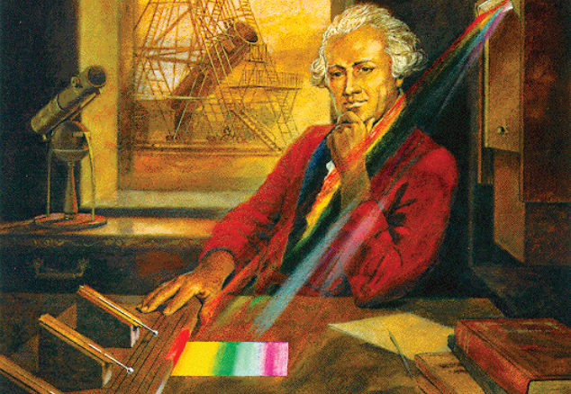
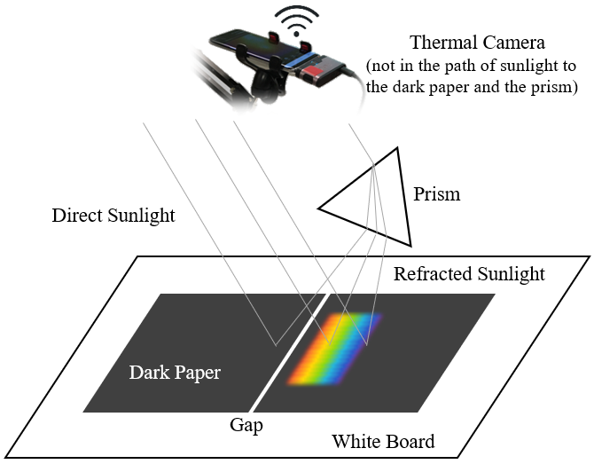
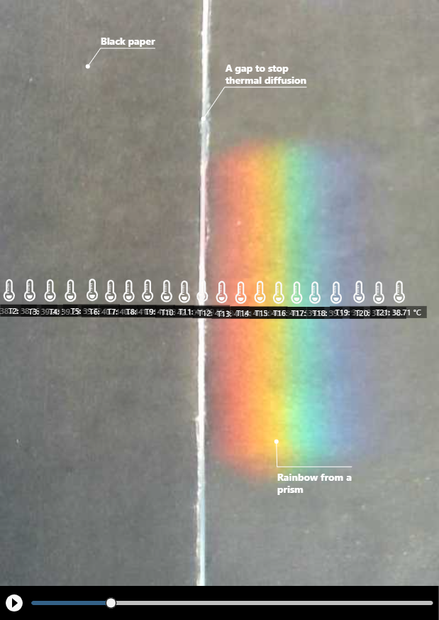
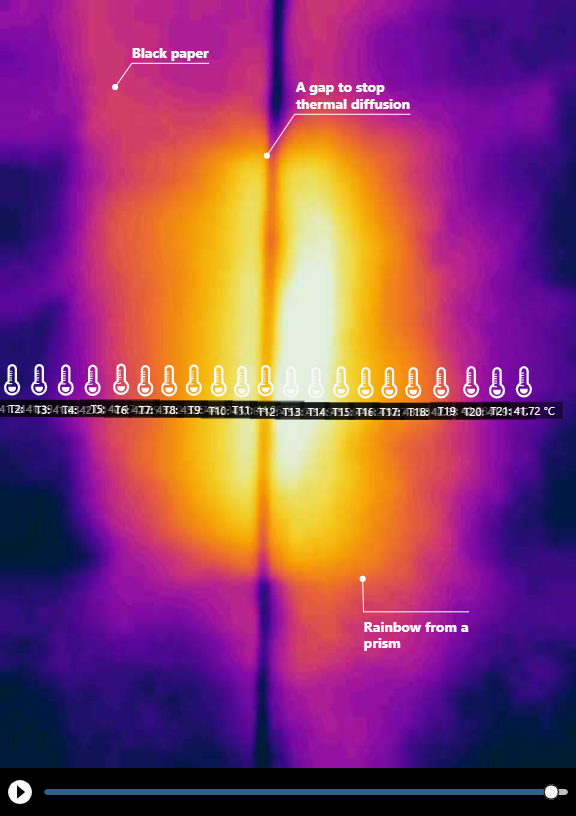
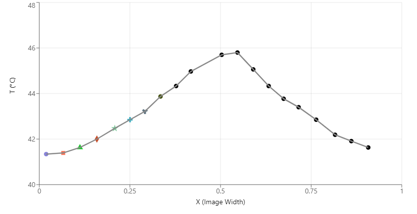
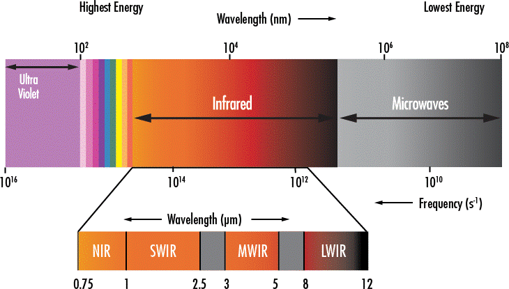

Discovering near-infrared light
with a thermal camera
Reproducing William Herschel's 1800 discovery of invisible light — no slit required, in broad daylight, with tens of thousands of "thermometers" in a modern thermal image.
We know substances of different colors absorb sunlight differently. Black absorbs the most and white absorbs the least. What about the absorption of light of different colors by the same substance? We know sunlight is made of different colors (wavelengths) of light. Do different colors have different heating effects when the sun shines on a surface? This inquiry led to the discovery of invisible infrared light by Sir William Herschel in 1800.

Herschel set up an experiment in which sunlight passed through a slit and then through a prism, forming a spectrum on his table. He arranged three thermometers such that the central one could be placed at different points in the spectrum; the other two acted as controls. He discovered significant heating outside the red light — now known as infrared light (more precisely, near-infrared light, or NIR light).
Reproducing Herschel's experiment
With a thermal camera, we can now easily reproduce his experiment:

We do not need to use a slit to allow only a light beam to travel through a prism into a room like Herschel did to eliminate the effect of direct sunlight. We can just perform the experiment under the sun in an open space — literally "in broad daylight"! The refracted light from the prism will cause extra heating on the surface of the dark paper it shines on, in addition to the heating by direct sunlight. The temperature difference between the additionally-heated area (part of which is illuminated by the rainbow) and the rest of the dark paper can be easily picked up by a thermal camera that typically has a temperature sensitivity of 0.1°C. Without the refracted light, a piece of dark paper exhibits a uniform temperature distribution when exposed under the sun.


Comparing the regular image and the thermal image of the warming on the dark paper.

The results clearly show that the area outside the red light also warms up significantly, suggesting the existence of invisible light outside the red limit of the visible spectrum. By comparison, the area outside the violet light does not warm up, meaning that this method cannot be used to detect UV light. This is why UV light was discovered a year later (1801) by Johann Wilhelm Ritter using a specific type of photographic paper that turns black more quickly in blue light than in red light.
Important notes
You may be wondering why there is a gap in our experiment (it is actually formed by two pieces of dark paper that do not touch each other). We deliberately created it for two reasons: to ensure that heat in the visible area is not conducted through the paper to the infrared area (so the rise in temperature can be solely attributed to absorption of light), and to serve as a visual marker in the thermal image so we can clearly see the boundary between visible and infrared light on the dark paper. The thermal image confirms that heat conduction was effectively impeded by the gap.
It is also important to note that the wavelength of the infrared light that warms up the paper is known as the near-infrared (NIR), as opposed to the long-wave infrared (LWIR) detected by a thermal camera such as the FLIR ONE camera.

Although we use a thermal camera in this experiment, what the device detects (the LWIR light) has nothing to do with the NIR light under investigation. What actually happens is that the dark paper absorbs the NIR light, which energizes its molecules. The molecules with higher kinetic energy then emit more LWIR thermal radiation that gets picked up by the thermal camera.
Conclusion
This experiment shows the incredible power of thermal imaging as a tool for scientific inquiry. While Herschel had only three thermometers, a thermal camera gives us tens of thousands of "thermometers". Through our Telelab platform, the experiment can now be shared with anyone in the world — whether or not they have a thermal camera at their disposal — to rediscover what Herschel found more than 200 years ago.
Funded by the National Science Foundation, we are advancing the educational power of thermal imaging in collaboration with a consortium of colleges around the country.
← Back to Infrared Explorer